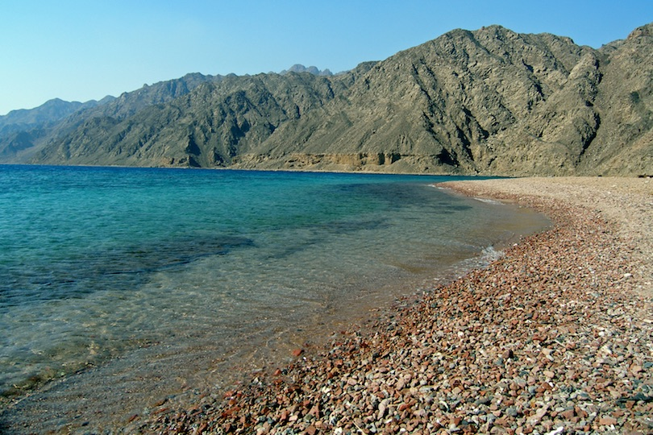
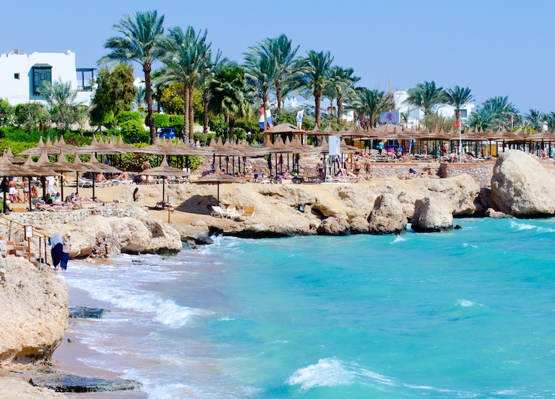

-
- FJORD BAY , TABA :
Located around 15-kilometers away from the small Egyptian town of Taba, near the border with neighboring Eilat in Israel, is a piece of picture-perfect paradise. Fjord Bay is the ideal location for diving, whether you have hundreds of hours of diving experience under your belt or you fancy giving it a go for the first time.
The reason this place is such an amazing spot to dive in is down to the massive bed of coral that lies at the bottom of the fjord. An impressive 24-meters in depth, it’s hard to believe the sheer amount of fish and the diversity of marine life that lives among the reef.
It’s nice to know that a healthy reef is an indication of clean water and good ecological balance. The fjord itself is a deep blue cove that is protected on three sides by a mountain range, which is great for hiking and taking in panoramic views over the fjord
-


- RAS ABU-GALOM , DAHAB :
If you are looking for a stunning spot to do some snorkeling or diving in Egypt, then Ras Abu Galoum is a brilliant choice. Situated close to a traditional Bedouin settlement – around 15-kilometers from the small coastal town of Dahab on the southeast coast of the Sinai Peninsula – is this sparklingly blue patch of ocean.This desert diving paradise is a feast for the eyes; the stunning seascape contrasts brilliantly with the arid rocky land and makes for a very special spot to visit. Arrive across the desert on camel-back before diving into the depths of the Red Sea, and experience for yourself the magnificence of its underwater landscape.Hard and soft coral create the perfect environment for angelfish, parrotfish and Picasso fish, amongst others, so make sure to bring your underwater camera
-


- NUWEIBA :
Nuweiba was once a thriving beach resort in the 1970’s, and was on the up until politics and relations with Israel meant that the beautiful beach was left to slide into decline. The beach is now a simple, low-key place, with the most interesting part home to a Bedouin village.Located on the coast of the Gulf of Aqaba, Nuweiba city may pale in comparison to developed resorts like Sharm El Sheikh, but its lack of infrastructure also adds to the charm. Now a popular stop-off on the Egyptian backpacking trail, the seven-kilometer long stretch of sand translates as ‘bubbling springs’ in Arabic.It is a pleasant spot to spend a few days soaking up traditional culture and exploring the natural beauty of the area. South Cove, a short drive away, is a great little spot for diving, and treks to the Coloured Canyon can be arranged through the Bedouin village
-

- RAS UM SID , SHARM EL-SHAIKH :
The best beach in Sharm El Sheikh, Ras Um Sid is an attractive beach filled with a variety of things to do. Boasting incredible views of the Red Sea, this well-known holiday resort is also very popular with divers, who want to explore the wealth of life beneath the waves.The setting, at the very top of a peninsula, means the area is a little more laid back and quiet compared to other, more busy beaches in the area. Close to the old souk – an insight into the traditions and heritage of the local people – there is plenty of accommodation close by that’s very popular with families.The beach itself is a place where divers who visit Egypt can’t help but be entranced by the beauty of the colors of the coral. Rare fish flit and hide in the incredible formations, which can also be seen simply by snorkeling and is a great way for children to learn about the ocean
-


- EL-GOUNA :
El Gouna, meaning ‘lagoon’ in Arabic, is a chic and stylish beach on the northern Red Sea on Egypt’s eastern coast. A bustling resort town, El Gouna has been attracting wealthy Egyptian holidaymakers and jet-set Europeans with its high-end shopping, diverse dining scene and, of course, a very attractive beach.It’s the kind of place where families and couples like to come to unwind and treat themselves to a few days in a 5-star resort – there are also plenty of activities to enjoy in the area. El Gouna is well-known in Egypt for its watersports – higher winds mean good conditions for kite-surfing, water-skiing and paragliding, to name just a few.
The picturesque natural seascape is laced by a network of canals and lagoons, with sandy islands set in the middle. Staying in El Gouna means days spent relaxing on white sandy beaches or playing at the area’s famous golf course, and evening drinking in cocktail bars.